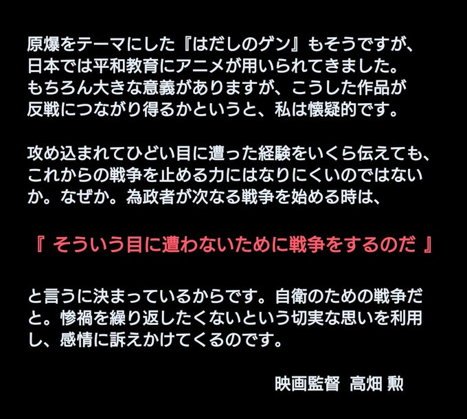

八月十五日 ー この日も朝から、家族の疎開先栃木県矢板に向かって出発した。王子から上野まで行き、上野から東北線で疎開先へと向かうのだ。 そこには、両親と出征中の兄の長男が滞在しているのだが、東京以外に縁者の居ない疎開者には、米などの食糧品が入手出来ない状況になっていたのである。
一週間ぶりで疎開先に向かうこの日は、 幸いに座席がとれて一安心したところで、頭の中は八月九日の新型爆弾(原爆)のことでいっぱいになった。
当時私は二十八才、三菱製鋼の社員で、丸の内の本社人事部に所属していたが、一ケ月前に、長崎工場の中元ボポーナス関係書類を携えて、長崎へ出張した。 二等車なのに二十数時間立ち通しで、漸く先方に到着したという次第であったが、到着後直ちに十数名の人事部員と一緒になって、社員一人づつのボーナス支給の準備をした。 そして六日後に仕事が完了したわけであるが、幸いにこの期間中空襲は一回も無かったのは、希有のことであったらしい。
仕事が終わってから、人事部長が御苦労さまと言って女子事務員のA子さんを案内役にして、長崎の名所を見学させてくれた。 要所要所を案内してくれて、おしまいにグラバー邸に着き、海が一望出来る庭の一隅に腰を下ろして、ホッと一息ついた。
A子さんは、沖縄出身で十九才。女学校をでると動員でこの長崎に派遣された由であるが、この日はまことにさわやかであった。 そして話がはずむうちに、学校で習った好きな歌をうたいはじめた。それは「平城山(ならやま)」であった。 この歌のメロディは、女学校の教室から漏れてくるのをしばしば聴いていて、私にもお馴染みであった。
その可憐な声は、海の向うまで、さわやかに響いてゆくやうであった。
A子さんは、翌朝私の乗った列車が出るまで見送ってくれた。そして、「もう直ぐ戦争は終わるわね。そしたら東京を案内して下さいね。」とにこにこしながら言った。 私もそれにつられて、「必ずよぶよ。だから元気で居ようよ。」と答えていた。一面焼野が原となっている東京なのにーー。
疎開先へと向かう列車は、やがて宇都宮の手前の雀宮(すずめのみや)にさしかかったきた。 ところが、突然けたたましい飛行機の爆音が頭上に響いた、ここ省宮は陸軍航空基地と閲いてはいたが、二ヶ月ほど前からは、全く飛行機の姿や音には接することがなかった。 そこで喫驚(きっきょう)した乗客達が、車窓のカバーをかきわけて覗いて見た瞬間、機銃掃射の銃弾がバリッ・バリッと列車内にとびこんできた。 列車は急停車し、車内は大騒ぎとなった。私達はその場に伏せたが、銃弾が命中したのか、苦しそうな叫び声があちこちで起こった。 あわてて時計を見ると、一時半を示していた。
ここまで乗ってきた列車を捨て、係員の誘導で宇都宮まで歩き、別の列車に乗って矢板に着いた時は、既に暗くなっていた。
ホームから降りて改札口に行くと、その辺の様子が何時もと違うことに気付いた。顔馴染みの駅員の姿が見えたので、聞いてみると、「戦争は終わったよ、お昼に天皇の放送があったよ。」という。 私は喫驚して、一時半の米機による機銃射撃のことを告げると、駅員は、「戦争が終わったから、お仕舞のつもりでやったのでしょう。 あいつら、もう日本人を人間と思ってはいないのだ。」と唾を吐き捨てる様に叫んだ。
何時もは軍人の家族だけしか利用出来ないと云うバスも、今日からは乗車出来るのかなと思ったが、聞けば、今日は運休になったと云う。
到着が遅れたので、兄の長男(二才)は、もう縁側に出て私を待ってはいないだろうと思いながら、六キロの道を歩き始めた。
防空頭巾を取り、シャツ一枚になってー、そしてその時頭にあったのは、南方諸島(トラック島)に出征している兄のことと、長崎で出会ったA子さんのことであった。
ー・ー・ー・ーこの数日後、長崎から職員が出張してきて、大凡のことがわかった。
A子さんはやはり犠牲者の一人であった。一緒にボーナスの仕事に携わった職員の殆ど全員が犠牲になったし、死体の判別すら出来ぬ惨たらしさであったという。
そして更に酷(きび)しい事が分かった。軍事機密ということで本人にも知らされていなかったが、米軍が沖縄に上陸してから五月に入って、A子さんの兄の戦死が伝えられ、更に防空壕に避難していた留守家族から、日本軍兵士が食糧を奪い、その際泣き叫んだ兄の幼い子が首を絞められて殺されたということ、更にそれを止めようとした嫂(あによめ)も射殺されたという、嫂の胸には、戦死者の家族票が有ったにも拘わらずーーーである。
そして、その一部始導を見た母親は発狂して、数日後自殺して果てたということーーー。
遺された父親からの、長崎の娘の安否を訊ねられた時に聴いたという長崎工場の戦員は、話すべき力も無かったと言って泣いていたという。
アニメ監督 高畑勲が私たちに投げかけた警告ジブリのアニメ「風の谷のナウシカ」「火垂るの墓」の製作を手がけた監督 高畑勲の言葉です。
戦争の悲惨さを伝える名作アニメを作りながら、 「反戦アニメで戦争を止められるのだろうか？」と監督は自問しています。

戦争への陽動広報に気づき、抗える人はどれくらいいるだろうか？